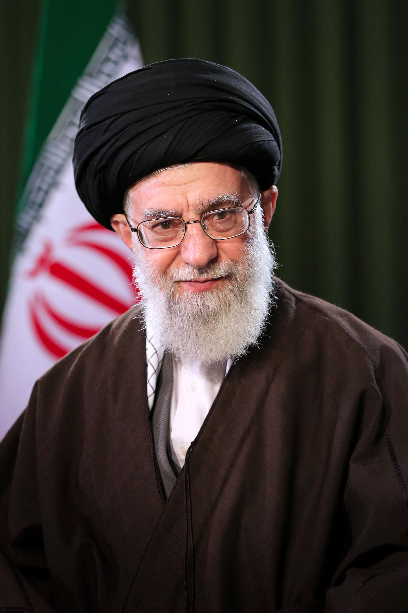
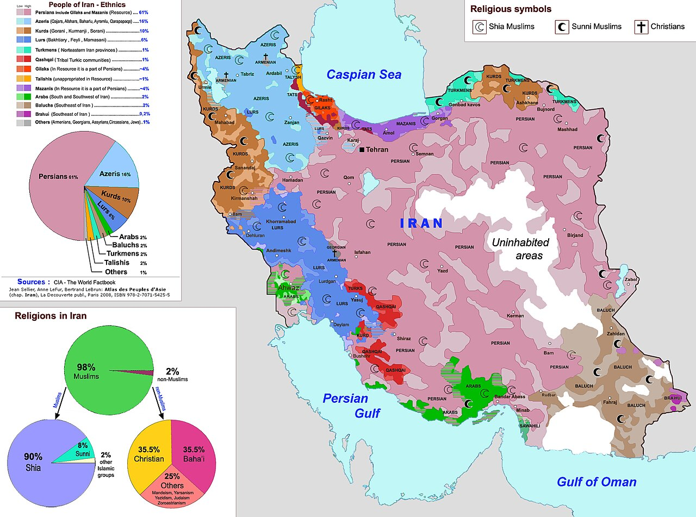
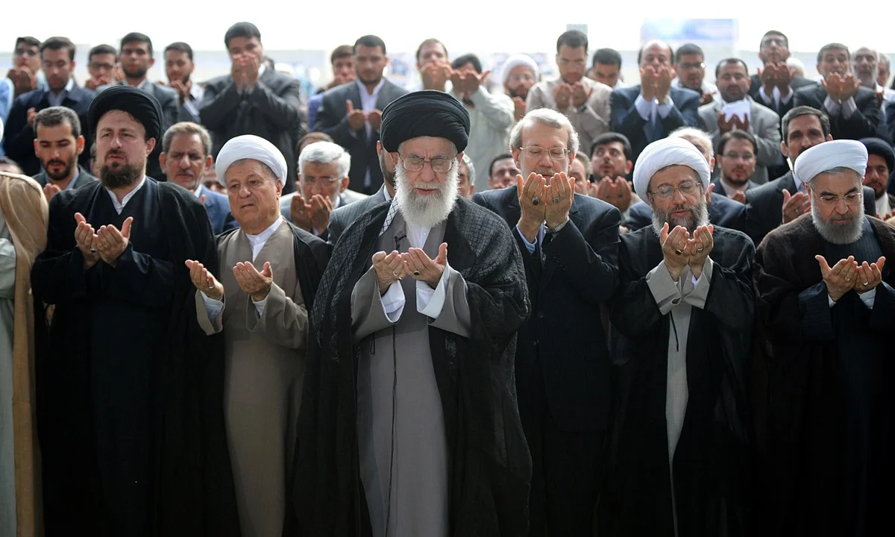

To understand Iran in war, you first have to understand how the Islamic Republic was built — and why a regime forged in resistance treats endurance itself as a form of victory.
Modern Iran is not just a nation-state. It is a revolutionary system, created in 1979, shaped by anti-Western resistance, Shiʿa clerical rule, and the conviction that surviving under pressure is itself a form of legitimacy. The Islamic Republic emerged from the overthrow of the Shah and placed supreme political authority in the office of the Supreme Leader (Rahbar) — a lifetime cleric standing above the elected president, parliament, and military. That structure is not incidental to how Iran fights. It is the reason Iran fights the way it does.
Timeline: from monarchy to a wartime regime
Six decades, four turning points. Each one hardened the next.
1953 · The CIA-backed coup
The U.S. and U.K. orchestrate the overthrow of Prime Minister Mohammad Mosaddegh after he nationalizes Iranian oil. The Shah is restored to power. The grievance — that Iran's sovereignty can be undone from Washington — never leaves the political bloodstream.
1979 · The Islamic Revolution
Mass protests, a general strike, and the return of Ayatollah Ruhollah Khomeini from exile end the Pahlavi monarchy. A new constitution installs velayat-e faqih — guardianship of the jurist — making a senior Shiʿa cleric the ultimate authority. American hostages are taken at the U.S. embassy. The break with the West is total.
1980–1988 · The Iran–Iraq War
Saddam Hussein invades. The eight-year war kills an estimated half-million Iranians, much of it in human-wave assaults the regime later mythologizes as defa'-e moqaddas — the Sacred Defense. The Islamic Revolutionary Guard Corps (IRGC) emerges from this war as a parallel army and the regime's most powerful institution. The lesson Tehran takes from the war is permanent: no one is coming to help us; survival is the victory.
1989 · Khamenei takes the office
Khomeini dies. Ali Khamenei — a mid-ranking cleric and former president — is elevated to Supreme Leader. Over the next thirty-six years he hardens the system: expanding the IRGC, building the regional "Axis of Resistance" (Hezbollah, the Houthis, Iraqi militias, Syria under the Assads), and treating ideological discipline as a military asset.

Ayatollah Ali Khamenei giving a speech in Tehran Square after he is elected Supreme Leader, following the death of his predecessor
2009 · The Green Movement
A disputed election triggers the largest protests since 1979. The regime crushes them. The message internally is that the street can be managed. The message externally is that Iran is willing to absorb reputational costs that other states would not.
June 2025 · The Twelve-Day War
Israel launches Operation Rising Lion against Iranian nuclear and command sites. The U.S. joins with strikes on Fordow, Natanz, and Isfahan. Iran retaliates against Al Udeid Air Base in Qatar. A ceasefire holds for nine months, but the strategic balance has shifted: Iran's nuclear program is degraded, its proxies are weakened, and the regime is convinced the West intends finish-the-job escalation.
Jan 2026 · Tehran protests and the crackdown
Economic collapse, fuel shortages, and the lingering humiliation of June 2025 spark protests across thirty Iranian cities. The IRGC's response is severe. International condemnation follows. The regime treats domestic crackdown and external war as parts of the same equation — both about who controls fear.
28 February 2026 · The decapitation strike
Israeli aircraft destroy a fortified bunker in northeast Tehran. Khamenei is killed. Within nine days, his son Mojtaba — long groomed for succession — is named the new Supreme Leader by the Assembly of Experts. The war reopens within forty-eight hours of his investiture.
From monarchy to Islamic Republic
Before 1979, Iran was ruled by the Shah, whose monarchy was modernizing, secularizing, and closely aligned with the West — a Cold War client state with the largest U.S.-equipped military in the region. The revolution replaced that system with a state built around religion, anti-imperial politics, and clerical authority. The message of the new regime was clear: Iran would never again be weak, submissive, or controlled from outside. Forty-seven years later, that message is still the one being broadcast — only now it is being broadcast under bombardment.
Regime logic
This matters because Iran's leadership does not think like a normal liberal state. It was born through revolution, hardened by the Iran–Iraq War, and legitimized through resistance. That means it often sees outside pressure not as a reason to surrender, but as proof that its worldview is correct. In strategic terms, the regime has spent decades preparing for the kind of conflict where it cannot dominate militarily but can still survive politically. The June 2025 strikes and the Khamenei assassination did not introduce that mindset. They confirmed it.
Ayatollah Khamenei, 1939–2026
Ali Khamenei became Supreme Leader in 1989 and oversaw the consolidation of the Islamic Republic into a harder, more security-driven state. Under his thirty-six-year rule, Iran deepened the role of the Revolutionary Guard, expanded its regional networks, and increasingly framed national survival as a test of ideological strength.
His death in the 28 February 2026 Israeli airstrike — codenamed Operation Epic Fury in later reporting — was the largest leadership decapitation in modern Middle Eastern history. Whether it ends the regime or galvanizes it is the central open question of this war, and the one this site's Outcome Theories page tries to address.

Ayatollah Ali Khamenei
Why history matters strategically
Iran's history creates a very specific strategic mindset. It does not align with how Western states are taught to think about cost, victory, and rationality. Four operating principles run underneath everything:
- Surviving is winning. A regime that does not collapse has, by its own definition, prevailed.
- Suffering can be politically useful. Civilian hardship validates the narrative of foreign aggression.
- Retreat looks like weakness. Concession invites further pressure; defiance is cheaper.
- Martyrdom and endurance strengthen legitimacy. Loss is not failure if it is sacralized.
That makes Iran unusually difficult to coerce through pure force. A state that finds meaning in suffering cannot be "made to feel enough pain to stop" — because the pain is already part of the argument it is making to itself.
Religion in Iran: Shiʿa power, Sunni minorities, and political meaning
Religion in Iran is not just cultural. It is institutional, political, and strategic. The Islamic Republic is built on Twelver Shiʿa Islam, and that identity shapes how the state explains authority, sacrifice, resistance, and conflict. Roughly 90% of Iranians are Shiʿa Muslims; in the wider Middle East, Shiʿa make up only about 15% of Muslims. Iran is, in other words, the demographic exception that has built a regional foreign policy around being exceptional.

Iran's ethnic and religious composition. Persian Shiʿa dominate the center; Kurdish, Arab, Baluch, and Azeri minorities cluster on the borders.
Shiʿa Islam and the state
Shiʿa Islam gives the Iranian state a vocabulary of suffering, injustice, endurance, and sacred resistance. The foundational story — the martyrdom of Imam Husayn at Karbala in 680 AD, vastly outnumbered, refusing surrender — is recited every year during Ashura, and it is not a metaphor for Iranian leaders. It is a model. A state that views struggle through that lens may accept costs that a more conventional state would find unbearable. In practical terms, this complicates deterrence: when one side thinks in terms of survival and prestige, and the other in terms of cost-benefit efficiency, they are not playing the same game.
Sunni and Shiʿa difference
The Sunni–Shiʿa divide began as a dispute over leadership in early Islam after the Prophet Muhammad's death in 632 AD, but over time it became a wider civilizational and political cleavage. Iran's modern state places Shiʿa identity at the center, while most of the broader Middle East — Saudi Arabia, the Gulf monarchies, Turkey, Egypt — is Sunni-majority. That gives Iran both a built-in sense of distinctiveness and a structural problem: most of its neighbors view it with suspicion, which is one reason Tehran has invested so heavily in non-state proxy networks rather than conventional alliances.

Shi'a worship at the Shrine of Fatima Masumeh in Qom with the Supreme Leader
Continue
Now that the regime's logic is on the table, the next page asks how that logic plays against the American way of war — and why the two sides may be fighting wars that don't even share a scoreboard. Read Strategy →
Sources & further reading
- Ervand Abrahamian, A History of Modern Iran (Cambridge University Press, 2nd ed., 2018).
- Ray Takeyh, Hidden Iran: Paradox and Power in the Islamic Republic (Council on Foreign Relations).
- Karim Sadjadpour, "Reading Khamenei: The World View of Iran's Most Powerful Leader" (Carnegie Endowment).
- International Crisis Group, ongoing Iran briefings (2025–2026).
- Predictive History, "The Law of Asymmetry" and "The Law of Escalation" — video essay series, 2026.